SOULDERN VILLAGE PLAYGROUND
OPENED 14TH JANUARY 2024
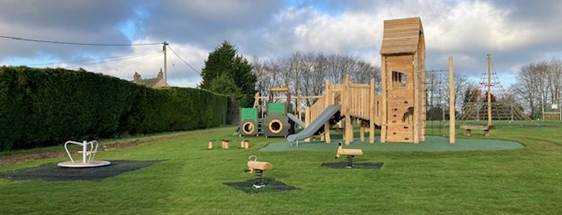
Background
Souldern has historically had a community playground for the last 50 years. However unfortunately after a ROSPA inspection the old playground had to be closed and was removed in early 2022 due to health & safety concerns.
The Playground Advisory Group chose the equipment to be included in the new playground through public consultations within the village including meetings, questionnaires and working parties. The outcome was a tender to several playground companies who submitted designs covering a wide range of play equipment. In May 2021 Kompan were selected as the preferred supplier of the new playground. Due to COVID progress on the new playground was slow at this time.
However, on 28th January 2023 at a village meeting the campaign to fundraise for the new playground was launched.
Fundraising
The new playground was not cheap and a substantial amount of money was needed to be raised before any work could start. A combination of methods were used fundraising events, individual contributors, local businesses, charities, regional and national funding bodies.
We were successful in applying to Valencia Communities Fund and to the National Lottery for grants. Local charities including Souldern United Charity, Souldern Horticultural Society, Souldern Village Hall and St Mary’s Church Choir gave generously.
There were a variety of fundraising events including a quiz night at The Fox, a Golf Day, Children’s Model Party, Tea and Cake at the Easter Egg Hunt, a Garden Party, a plant sale, Craft Fair, Table Top sale, Wriggly Monkey Brewery Tour and Wine-tasting evening.
There was also great generous support to the fundraising from some local businesses.
But most of all it was through the kind donations from the residents of Souldern that helped reach the fundraising target and our appreciation goes out to them.
There is a sign at the playground giving thanks to those who supported the playground through funding.
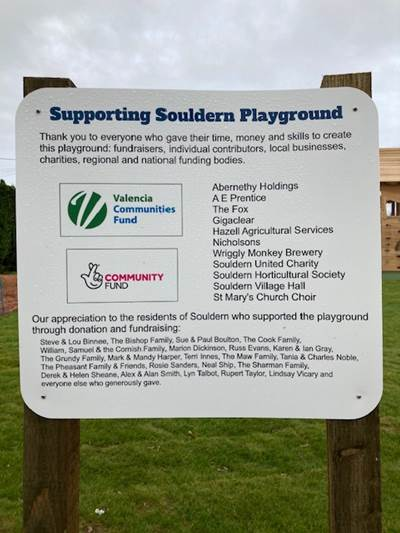
Playground installation
The first job was to prepare the ground to remove the remaining old playground foundations (concrete and rubber matting) and level the area in preparation.
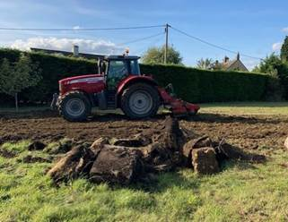 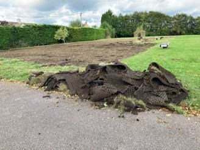
Then on 1st November 2023 the new playground was delivered and installation began.
The Witches Tower
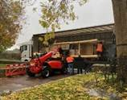 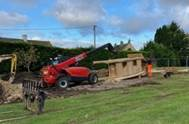 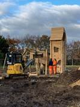 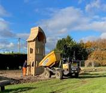
When the equipment had all been installed the next step was to lay the safety flooring which consisted of rubber matting for all the equipment except for the Witches Tower where a rubber wet pour solution was to be laid.
Given the weather conditions and the machinery involved in installing the equipment the ground was not in a good state and was wet and muddy. However for the rubber matting it required to be laid on grass and not on mud.
And so a team of 12 Souldern volunteers spent a damp Sunday morning laying over 450 sq metres of turf so that the matting team could get to work on the Monday putting the safety surfaces down.
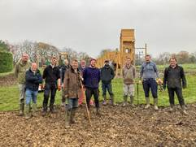 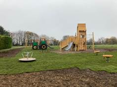 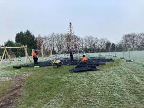
The playground was now ready for its post-install inspection. After a few minor snags were fixed and a further 250 sq metres of turf laid the new playground was ready.
On Sunday 14th January 2024 the new Souldern Village Playground was opened with many children taking the opportunity to play on the new equipment.
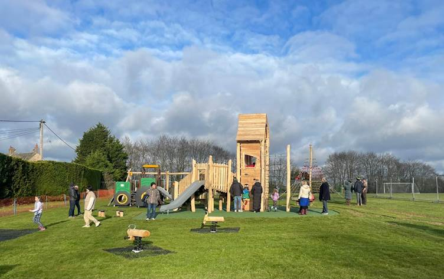
The playground installed covered the first two phases of the plan and there will be further phases to enhance both the playground and the playing fields as a whole.
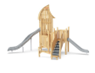 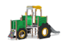 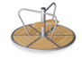 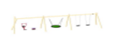 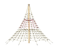